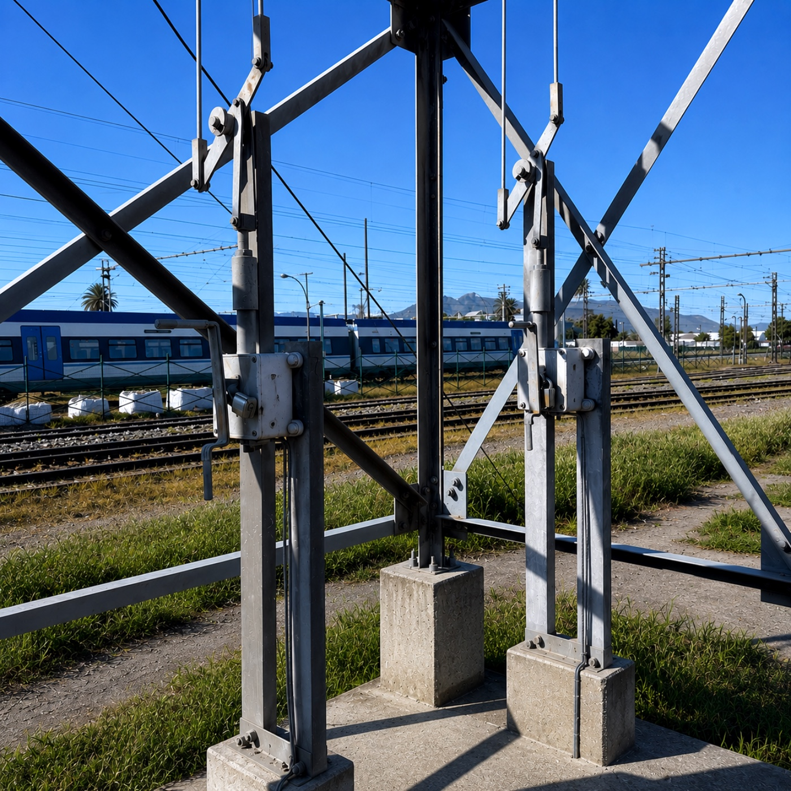
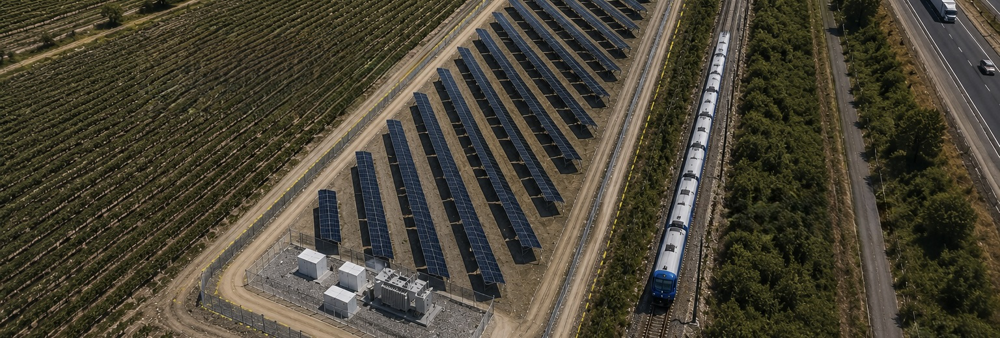

Criterio técnico directo.Direct technical authority.
Asesoría técnica independiente para infraestructura ferroviaria, energía, BESS y data centers en América Latina, en las etapas donde las decisiones definen el resultado. Independent technical advisory for rail, energy, BESS, and data centre infrastructure across Latin America, at the stages where decisions define the outcome.

Forte PE es una firma de asesoría técnica independiente para infraestructura: ingeniería eléctrica, sistemas ferroviarios, energía y gestión de proyectos, con operación permanente en Santiago y mandatos activos en Chile y Centroamérica. Forte PE is an independent technical advisory firm for infrastructure: electrical engineering, railway systems, energy, and project management, permanently based in Santiago with active mandates in Chile and Central America.
Trabajamos directamente con owners, ministerios, financistas y agencias públicas, con criterio técnico de primera línea y responsabilidad directa, sin capas intermedias. We work directly with owners, ministries, lenders, and public agencies, bringing first-line technical judgement and direct accountability, with no intermediate layers.
Cuando la escala lo requiere, armamos el equipo que el proyecto necesita. When scale requires it, we assemble the team the project demands.
Lo que hacemos.What we do.
Asesoría técnica a lo largo del ciclo de vida del proyecto, desde la evaluación temprana hasta el cierre técnico. El formato de cada compromiso se define según lo que el proyecto necesita. Technical advisory across the full project lifecycle, from early-stage assessment through technical close-out. Each engagement format is defined by what the project requires.
Evaluación técnica tempranaEarly-stage technical assessment
Validación de restricciones, supuestos de diseño, interfaces y viabilidad técnica antes de comprometer decisiones críticas del proyecto. Incluye prefactibilidad de plantas PV y BESS y evaluación eléctrica de sitio para data centers. Validation of constraints, design assumptions, interfaces, and technical feasibility before committing to critical project decisions. Includes PV and BESS plant pre-feasibility and electrical site assessment for data centres.
Owner's EngineerOwner's engineering
Representación técnica del owner en diseño, ejecución y puesta en servicio. Revisión de contratistas, gestión de interfaces y control de desviaciones. Technical representation of the owner through design, execution, and commissioning. Contractor review, interface management, and deviation control.
Revisión técnica independienteIndependent technical review
Revisión objetiva de propuestas, diseños, criterios técnicos y supuestos de contratistas. Para owners, financistas y agencias públicas que necesitan una segunda opinión técnica. Objective review of contractor proposals, designs, technical criteria, and assumptions. For owners, lenders, and public agencies requiring a second technical opinion.
Coordinación de proyectos complejosComplex project coordination
Gestión de interfaces entre disciplinas, contratos y actores institucionales. Seguimiento de entregables, control de riesgos y continuidad entre diseño, terreno y operación. Interface management across disciplines, contracts, and institutional stakeholders. Deliverable tracking, risk control, and continuity between design, site, and operation.
Asesoría a prestamistas y due diligenceLender's advisory & due diligence
Evaluación técnica para financistas e instituciones multilaterales. Revisión de factibilidad, riesgos técnicos, supuestos del contratista y condiciones de implementación. Technical evaluation for lenders and multilateral institutions. Feasibility review, technical risk assessment, contractor assumptions, and implementation conditions.
Asesoría institucional y estratégicaInstitutional & strategic advisory
Apoyo técnico a ministerios, operadores y agencias públicas en planificación de proyectos, evaluación de programas y coordinación con organismos regulatorios y multilaterales. Technical support for ministries, operators, and public agencies in project planning, programme evaluation, and coordination with regulatory and multilateral bodies.

Respondemos al proyecto.We answer to the project.
No al contrato.Not to the contract.
Hablemos de su proyecto.Let's talk about your project.
Si su proyecto requiere claridad técnica para avanzar, estamos disponibles para revisar el contexto y definir los próximos pasos. If your project requires technical clarity to move forward, we are available to review the context and define next steps.